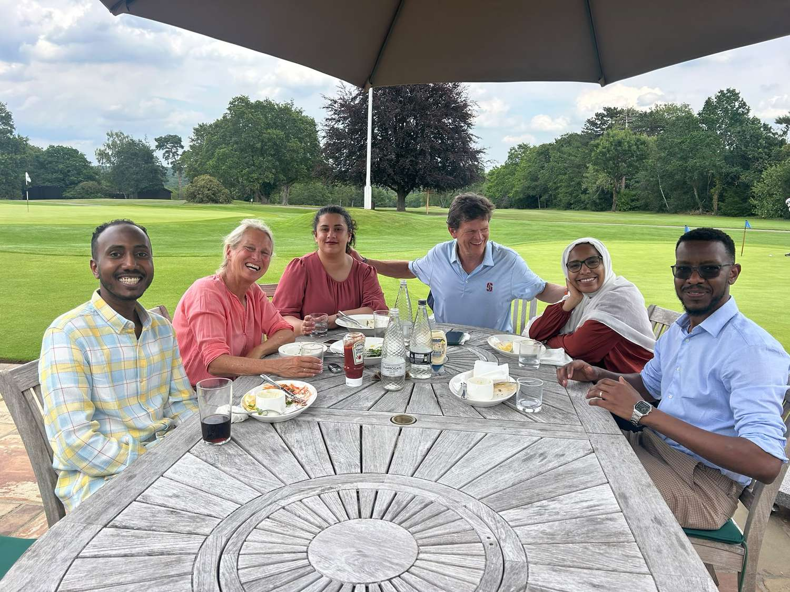
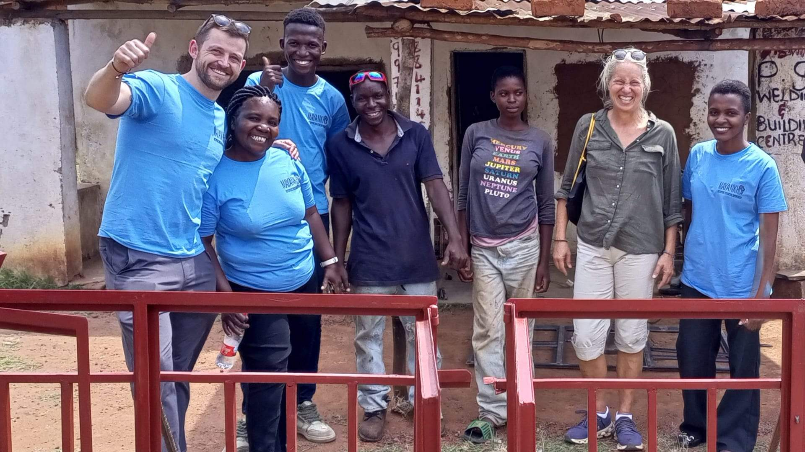
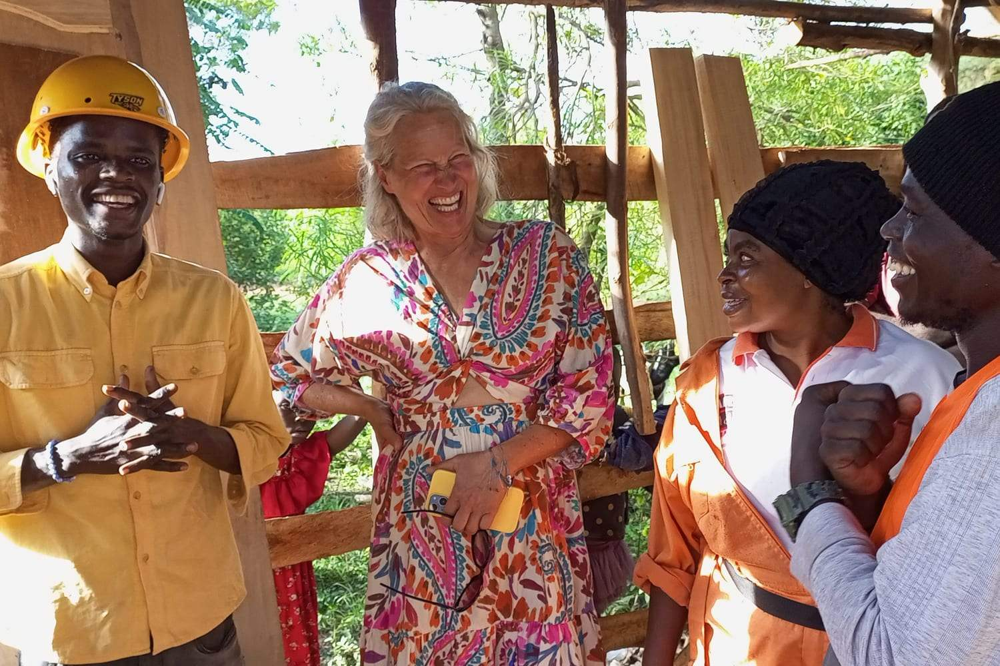

For individuals
Fellowship programme
Academic, professional and practical support for refugees and at-risk professionals as they rebuild careers in the UK and continue their commitment to social impact.
Explore the Fellowship

Our two programme pathways offer focused support for individual professionals and long-term partnerships with community organisations to deliver change.

For individuals
Academic, professional and practical support for refugees and at-risk professionals as they rebuild careers in the UK and continue their commitment to social impact.
Explore the Fellowship
For community organisations
Funding and partnership support for grassroots organisations working across education, integration, livelihoods and sport to create meaningful community impact.
Explore grants